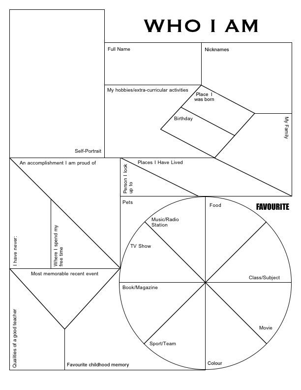

SVGs (Scalable Vector Graphics) for Web
What is an SVG?
When should we use SVGs?
Why should we use SVGs?
^ This is an SVG, let's play around with it!
Resources:
Medium -
Exporting for web using Illustrator
CSS-tricks -
Using Svg
Tympanus Codrops -
Drawing & Animation with SVG
Youtube Tutorial -
Optimizing SVGs
*In Class:
Create and Export an SVG.
Display the SVG in an .html file.
Change one of the the SVG attributes.
HTML5 Canvas
Resources:
w3schools -
Intro to HTML5 Canvas
Codepen -
Drawing with Canvas
Jollo -
Canvas Animation
Github user Lamberta -
Foundation HTML5 Animation with JavaScript
HW week-4
Recreate the pattern below using SVGs and/or HTML5 Canvas
The Shapes can be filled in with colors, patterns, text, images, etc. to represent 'WHO I AM'
Canvas requires basic understading of Javascript, if you don't feel comfortable using Javascript yet, feel free to use SVGs and 'img' tags
We will cover Javascript next class :)

Source:
Are.na